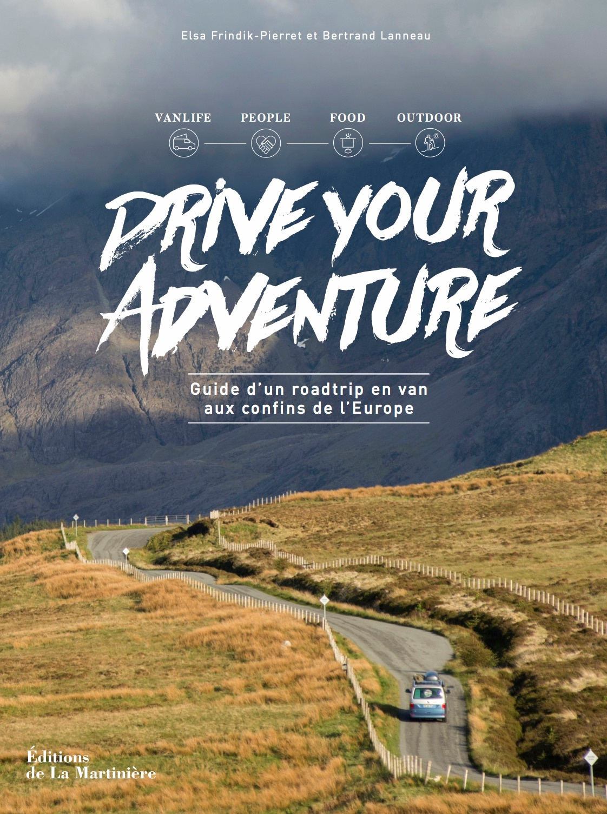
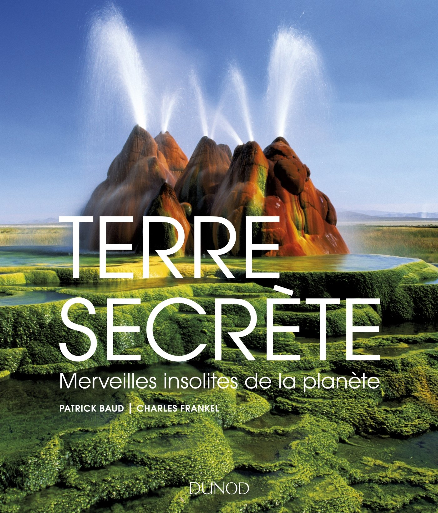
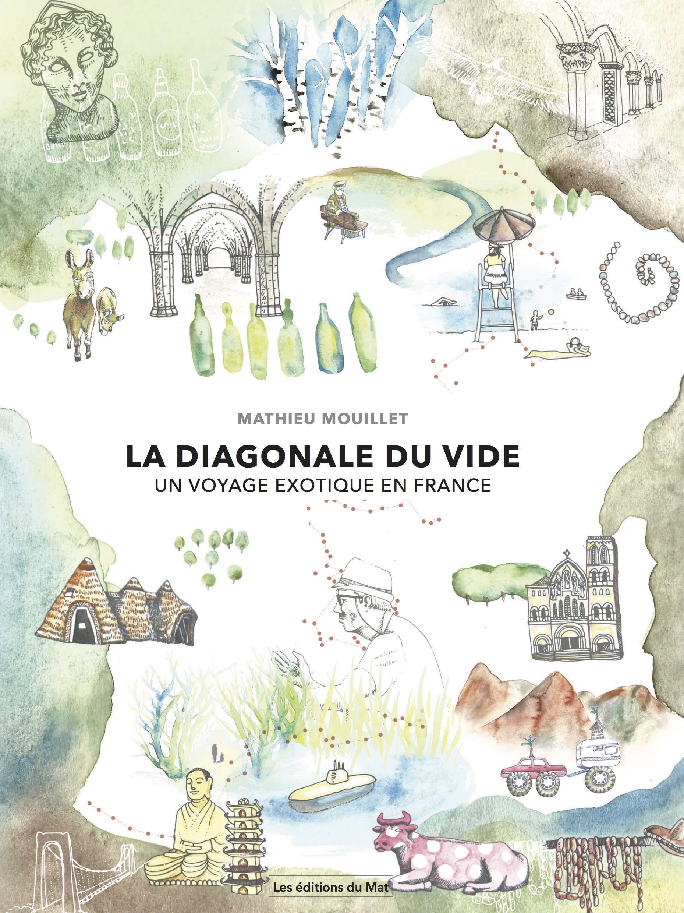
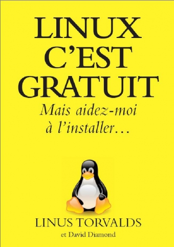

Le livre du voyage
Imaginez un livre qui serait comme un ami de papier. Imaginez un livre qui vous aide à explorer votre propre esprit. Imaginez un livre qui vous entraîne vers le plus beau, le plus simple et le plus étonnant des voyages. Un voyage dans votre vie. Un voyage dans vos rêves. Un voyage hors du temps. Ce livre vous le tenez entre vos mains.

Drive your adventure
Entre récits et guides de voyage, devenez les auteurs du quatrième tome de la collection Drive Your Adventure. Les ouvrages sont conçus comme de véritables guides de voyage en van par pays. Revisités sous le prisme du roadtrip et du voyage nomade, ils sont empreints d'informations utiles sur la destination et la vie en van, de bonnes adresses, de belles rencontres et de photos superbes.

Terre secrète
Patrick Baud et Charles Frankel ont sélectionné dans cet ouvrage cent merveilles naturelles très étonnantes et pourtant souvent méconnues: Porte de l'enfer (Turkmenistan), Terre des 7 couleurs (île Maurice), Bulles de méthane gelées du Lac Abraham (Canada), Cristaux géants de la Cueva de los cristales (Mexique)... A chaque fois, une magnifique photographie accompagne la description du site et l'explication scientifique du phénomène.
Vous pouvez plonger dans ce livre et le lire d'une seule traite, ou bien le déguster au gré de vos envies, pour découvrir les plus beaux secrets de notre planète!

Into The Wild
Voyage au bout de la solitude est un récit biographique de Christopher McCandless écrit par Jon Krakauer, publié en 1996. Il retrace l'histoire véridique de ce jeune homme qui avait troqué la civilisation pour un retour à la vie sauvage, et y avait trouvé la mort

L’antarctique, le rêve d’une vie
"Traverser l'Antarctique, c'était mon rêve d'enfant. J'ai décidé d'affronter cette immensité blanche en empruntant un itinéraire jamais exploré, le plus long que l'on puisse envisager : 5 100 km d'une trace presque rectiligne, avec, devant moi, la solitude, les champs de crevasses, les tempêtes de neige, les températures glaciales.
traversée m'obligera, je le sais, à battre des records de vitesse pour ne pas être englouti par l'hiver. On me prédit l'enfer, une course contre la mort. Après trois semaines de bateau pour rejoindre le continent au milieu des icebergs, je plante fermement mes bâtons dans la glace, mes skis bien parallèles, un traîneau de 256 kg fixé aux épaules.
L'espace d'un instant, mon cœur se serre. Comme un début de vague à l'âme. Je repense alors à Cathy, ma femme, qui, avant de rejoindre les étoiles, m'avait soufflé : " Vis pour moi, Mike, vis pour nous deux. " Je ne me retournerai plus. Je regarderai devant. Armé de mon seul ski-kite et de mes mollets, je suis loin d'imaginer l'épreuve qui m'attend."

La diagonale du vide
La diagonale du vide, un voyage exotique en France est le récit d’un voyage des Ardennes au Pays basque. 18 mois le long d’une diagonale qui s’étire sur 1500 kilomètres et traverse des départements parmi les moins peuplés de France : La diagonale du vide. Durant un an et demi, à pied, à vélo, en montgolfière, j’ai exploré ces campagnes et rencontré leurs habitants. Le défi : découvrir la France comme un pays exotique.

Linux c'est gratuit
Rien ne prédisposait Linus Torvalds à devenir l’informaticien le plus convoité de la planète.
Tout commence en 1981, à Helsinki, en Finlande. À l’époque, il n’y a pas de console, pas de Mac, pas de PC, pas de Wii et pas d’Internet.
À onze ans, alors que la plupart des garçons jouent au hockey et font du ski avec leurs parents, Linus découvre l’informatique. Son grand-père lui a offert pour son anniversaire le premier ordinateur familial disponible sur le marché.
À vingt et un ans, il développe son propre système d’exploitation (le programme qui donne un visage humain aux ordinateurs) et le publie sur Internet. Gratuit et ouvert, les internautes du monde entier peuvent l’améliorer nuit et jour, bénévolement : Linux est né. La légende dit que le visage rond à lunettes de Linus Torvalds devint alors la cible préférée des jeux de fléchettes chez Microsoft. Le géant de l’informatique venait de découvrir une grande famille de programmateurs complètement passionnés. Prêts à travailler gratuitement dans leur lit, en pyjama, avec leur copine et à partager généreusement leurs découvertes. Tout ça pour améliorer un projet commun. Tout ça pour jouer ensemble. Tout ça grâce à Internet, évidemment !

Java pour les nuls
Idéal pour commencer avec Java comme premier langage !
Grâce à ce livre, vous allez rapidement écrire rapidement vos premières applets Java, sans pour autant devenir un gourou de la programmation objet. Rassurez-vous, on ne vous assommera pas avec toutes les subtilités du langage Java, mais vous posséderez rapidement les bases nécessaires pour utiliser la panoplie d'outils du parfait programmeur Java.
Cette nouvelle édition a été entirement mise à jour avec les spécifications de la dernière version du SDK Java. Intègre les nouveautés apportées par Java 8.